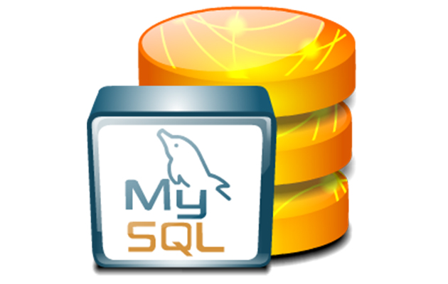
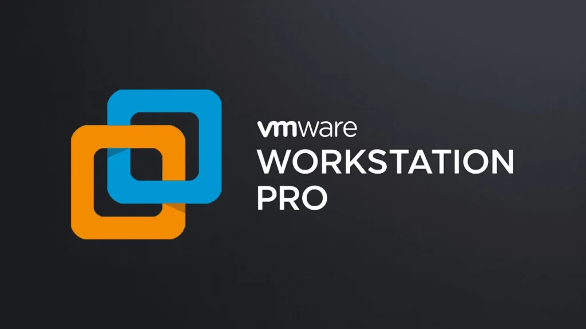
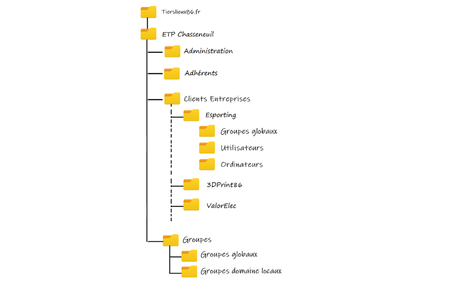
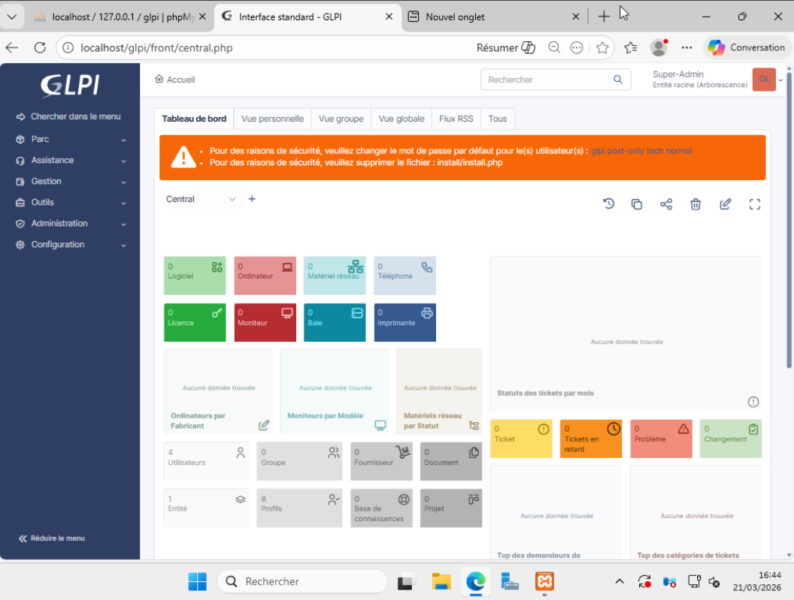
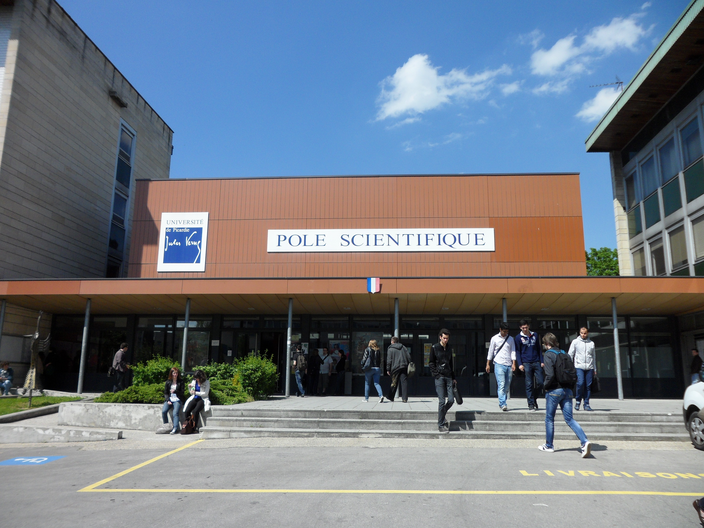
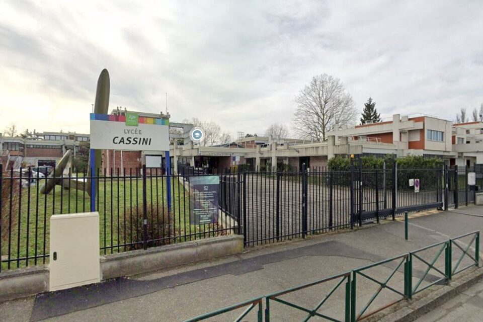
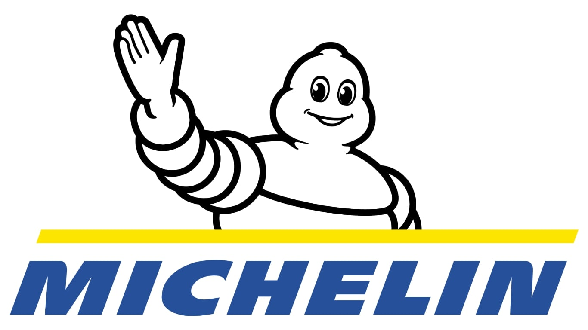

Eudes Thomas
À propos de moi
Découvrez mon parcours, mes compétences et ma passion pour l'informatique

Eudes Thomas
Étudiant en BTS SIO SISR
Hondainville, France
Qui suis-je ?
Je suis un étudiant passionné en informatique, actuellement en BTS SIO option SISR au CNED. Je m'intéresse particulièrement à l'administration systèmes & réseaux, la cybersécurité et la virtualisation.
Je souhaite continuer ma formation par le biais de l’apprentissage en alternance, ce qui me permettra :
- . D’acquérir une expérience professionnelle, et de pouvoir confronter mes connaissances théoriques aux réalités du terrain.
- . Le monde de l’entreprise est toujours en mouvement, l’alternance offre la possibilité de participer à la construction et au développement de nouveaux projets d’innovation et de pilotage de la performance, notamment en participant à la mise en œuvre et l’exploitation des réseaux informatiques.
Points forts
- ✔ Autonomie
- ✔ Rigueur
- ✔ Esprit d'équipe
Centres d'intérêt
- ✔ Cybersécurité
- ✔ Virtualisation
- ✔ Sport & Gaming
Compétences
Support et mise à disposition des services informatiques
Windows Server
Installation et configuration de Windows Server 2025.

Windows 11
Installation, dépannage des postes clients en environnement pro.

window 10
Installation, dépannage des postes clients en environnement pro.
Linux
Installation, configuration Debian, Ubuntu.
HTML / CSS
Conception web avec TailwindCSS.
Certification PIX
Protection des données.
Administration des systèmes et des réseaux
Proxmox
Virtualisation serveurs, création VM et paramétrage.
GLPI
Gestion tickets, inventaire et stratégies GPO.

Cisco
Configuration routeurs, VLAN, switch.
Services Réseaux
DNS, DHCP et MySQL.

Active directory
Configuration de services, gestion des GPO et des utilisateurs
VMware
Virtualisation serveurs, création VM et paramétrage

Projets Professionnels
Projet 1
Mise en place d'un prototype virtuel et Active Directory

Cliquez pour voir les détails et documents
Projet de mise en place d'un prototype de réseau TiersLieux et Mise en place des OU Active Directory et règles GPO.
Objectif : Améliorer la qualité du site, son référencement et sa conformité aux standards de la gestion d'incident.
Projet 2
Mise en place d'un serveur GLPI, agent GLPI et gestion ticket d'incident

Cliquez pour voir les détails et documents
Projet de mise en place de serveur GLPI et Active Directory, d’évolution et de déploiement du site TiersLieux.
Objectif : Améliorer la qualité du site, son référencement et sa conformité aux standards de la gestion d'incident.
Parcours
BTS SIO SISR – CNED
2024 – 2026Administration systèmes, réseaux et cybersécurité.
Licence Informatique – Amiens
2022 – 2024Programmation et algorithmique.

Baccalauréat Général
2019 - 2022Spécialités Maths et NSI. Mention obtenue.

Ma Formation : BTS SIO
"Le Brevet de Technicien Supérieur Services Informatiques aux Organisations est un diplôme reconnu par l'État (Bac+2) qui forme aux services informatiques fournis aux organisations."
Option SISR
Solutions d’Infrastructure, Systèmes et Réseaux
L'option SISR s'occupe de l'infrastructure réseau et de l'administration des systèmes. L'objectif est d'assurer le bon fonctionnement, la sécurité et la maintenance des services informatiques de l'entreprise.
- ✔ Administration système (Linux & Windows)
- ✔ Virtualisation et Stockage
- ✔ Cybersécurité et supervision
Option SLAM
Solutions Logicielles et Applications Métiers
L'option SLAM est centrée sur le développement. Elle apprend à concevoir des applications, à coder des sites web et à gérer des bases de données pour répondre aux besoins spécifiques d'une organisation.
- ✔ Développement d'applications (Python, Java...)
- ✔ Gestion de bases de données (SQL)
- ✔ Conception web et mobile
Répartition horaire hebdomadaire
* CEJM : Culture Économique, Juridique et Managériale des organisations.
Mes Stages

Michelin Blanzy – Support Informatique (Stage 2)
Février 2026 - Mars 2026 (6 semaines)
Approfondissement de la résolution de pannes et maintenance industrielle en environnement de production critique.
Missions principales
- .Documentation de procédure technique avancée
- .Support utilisateur de proximité (Niveau 1 et 2)
- .Gestion et résolution d'incidents sur équipements réseau
Michelin Blanzy – Support Informatique (Stage 1)
Mars 2025 - Avril 2025 (4 semaines)
Diagnostic et résolution de pannes matérielles et logicielles au sein du parc informatique de l'usine.
Missions principales
- .Préparation et déploiement de postes de travail
- .Assistance aux utilisateurs sur site
- .Maintenance préventive des terminaux industriels
Épreuves E5 / E6 / E7
Support et mise à disposition de services
Épreuve orale s'appuyant sur le Portfolio de situations professionnelles vécues en stage ou en formation.
- • Réponse aux incidents (Helpdesk)
- • Déploiement de postes et services
- • Gestion du patrimoine informatique
Administration systèmes et réseaux
Épreuve pratique évaluant les compétences de conception et d'administration d'une infrastructure réseau et systèmes.
- • Virtualisation (Proxmox/ESXi)
- • Routage, commutation et VLANs
- • Services (Active Directory, DHCP, DNS)
Cybersécurité des services
Épreuve écrite portant sur la sécurisation des infrastructures, des accès et des données au sein de l'organisation.
- • Sécurisation des équipements réseau
- • Analyse de vulnérabilités
- • Politiques de sécurité (PSSI)
Veille Technologique
Sources d'informations
Le Monde Informatique
Actualité IT, Cloud et Infrastructure en France.
Référence pour le suivi des investissements numériques des entreprises françaises et des évolutions du Cloud.
ZDNet
Analyse des tendances technologiques professionnelles.
Expertise sur la mobilité, la 5G et les stratégies de transformation digitale pour les décideurs informatiques.
Silicon
Décryptage de la transformation numérique mondiale.
Focus sur l'open-source, les data centers et les enjeux de souveraineté numérique européenne.
Articles Spécifiques & IA
AI in Cybersecurity Market
Explosion du marché de l'IA appliquée à la cybersécurité en 2025.
L'article souligne l'augmentation massive des investissements dans les systèmes d'auto-défense capables de bloquer les attaques.
IA & Cyber Protection
Utilisation de l'IA pour prévenir les fuites de données massives.
Analyse des algorithmes de détection d'anomalies comportementales identifiant les exfiltrations en temps réel.
6 AI Trends to Watch
Les tendances majeures de l'IA en sécurité informatique pour 2025.
Focus sur l'IA générative utilisée par les attaquants et la riposte via des LLM spécialisés en défense.